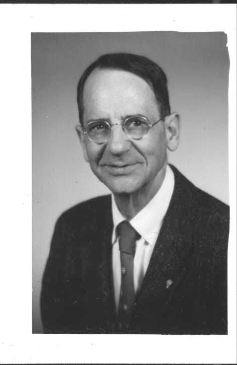
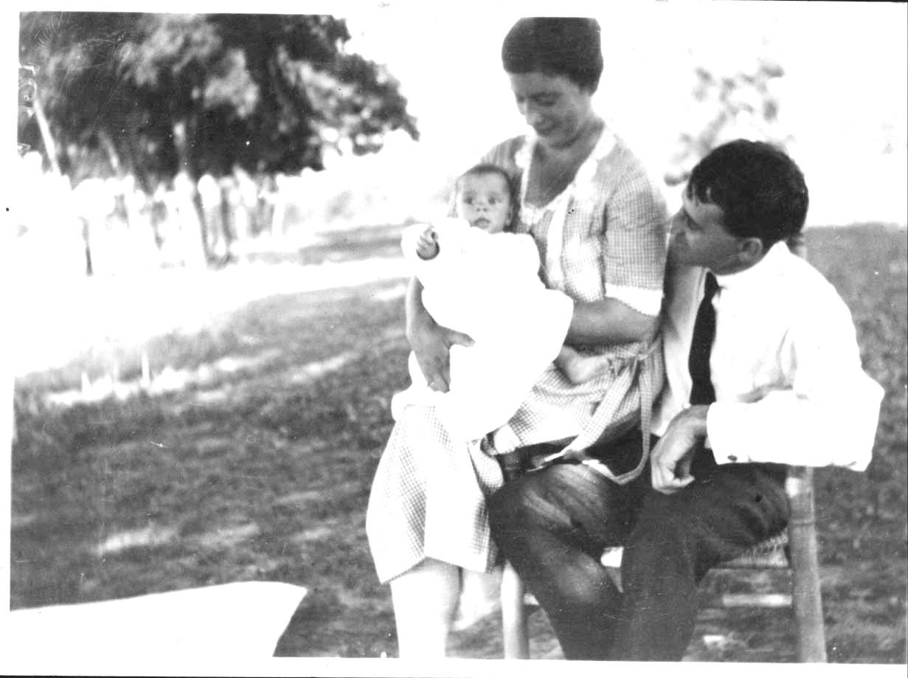

Philip H. Pope was the author of the verses of "It's a Long Way to Amphioxus". In 1921 he and his fiancee Louise Smith were attending a summer course in biology at the Biological Laboratory of the Cold Spring Harbor Laboratory on Long Island, New York. They heard some students singing the chorus to the song, and Louise commented that Philip should write verses for the song. He did.
|  |  |
| Philip Pope, about 1960 |
Louise Smith Pope and Philip Pope
admire their daughter Edith in 1923 |
| Photographs courtesy of Edith Pope Patten | |
Philip and Louise both came from Maine (Manchester and Augusta, respectively). They met on a class trip to Washington, DC, when Philip was 21 and Louise was 14. Louise went to college and did graduate work at Smith College. Philip was an undergraduate at Bowdoin College, and went on to do graduate work at Harvard, completing a Ph.D. at the University of Pennsylvania in the area of herpetology.
Philip proposed to Louise that summer at Cold Spring Harbor, and they were subsequently married. (Louise broke off her graduate work just short of her Ph.D. to, as her daughter Edith says, "get her P.H.P. instead"). Philip Pope spent one year teaching biology at Reed College in 1922. In 1923 an infection of tuberculosis became active, and he entered the Veterans' Hospital in Walla Walla, Washington. That year their daughter Edith was born. Philip Pope remained in the hospital for 6 years. After leaving the hospital he had no job, and they tried farming. In 1930 the Popes were offered jobs teaching Biology at Whitman College in Walla Walla. They remained on its faculty until their retirement (Philip retired in 1953, Louise in 1962). Their daughter Edith remembers field trips by car to the Columbia River not far from Walla Walla, with the Popes and their students singing biological songs as they drove. Philip also contributed substantially to the collections of the Whitman College Herbarium.
Both Philip and Louise died in 1970.
The house where the Popes lived was called "The Vatican". Some feeling for their sense of humor will be found in the article in the Whitman Magazine about Louise Smith Pope, which is available on the web.
I am indebted for most of this information to the late Edith Pope Patten and the late Art Rempel.
Joe Felsenstein